Laporan Praktikum 7: Konfigurasi Laravel
Pendahuluan
Praktikum ini bertujuan untuk memberikan pemahaman komprehensif mengenai penggunaan Laravel sebagai salah satu framework PHP paling populer yang berbasis arsitektur Model-View-Controller (MVC). Melalui serangkaian tahapan mulai dari instalasi perangkat pendukung hingga pembuatan proyek baru, praktikan diharapkan mampu menguasai struktur dasar serta alur kerja pengembangan aplikasi web modern yang efisien dan terorganisir. Penggunaan alat bantu seperti Composer, Node.js, dan Git dalam praktikum ini juga menekankan pada standar industri dalam mengelola dependensi dan kontrol versi pada lingkungan pengembangan Laravel.
Repository GithubLangkah Kerja
Pertama, kita harus memastikan alat-alat yang dibutuhkan sudah terinstall di komputer kita. Mulai dari PHP, XAMPP/Laragon, Composer, Git, Node JS, dan NPM.
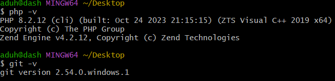
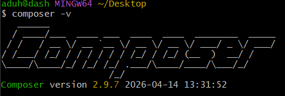
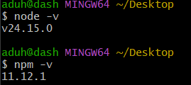
Ada beberapa cara yang dapat dilakukan untuk membuat project
laravel, pertama kita harus download installer laravelnya
terlebih dahulu, agar kedepannya tinggal create project saja,
dengan cara
composer global require laravel/installer. Nah
jika installer laravelnya telah terdownload, untuk kedepannya
kita dapat langsung create project laravel baru saja, ada 2
cara juga, yaitu laravel new nama-project atau
composer create-project
laravel/laravel=^versi-yg-akan-diinstall nama-project
--prefer-dist. Disini aku menggunakan code create project yang pertama.
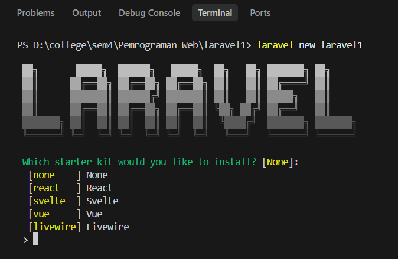
Lalu biarkan saja prosesnya berjalan, akan ada beberapa pertanyaan, jawablah sesuai kebutuhan, seperti pertanyaan mengenai database, dan lainnya. Jika sudah, akan terlihat output seperti ini:
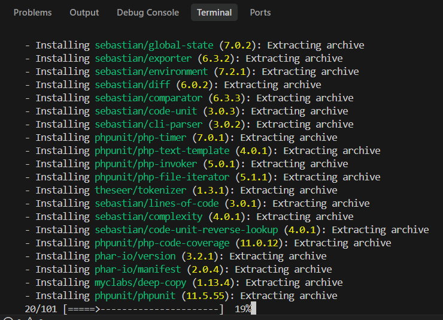
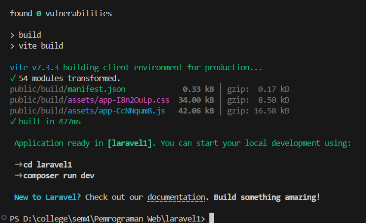
Setelah project baru sudah terbentuk, kita akan diminta untuk
change directory ke folder project baru tersebut, gunakan
perintah cd nama-project lalu kita jalankan
command npm install && npm run build dan
selanjutnya composer run dev / npm run dev ini
berfungsi agar project kita selalu di refresh oleh sistemnya
saat proses development.
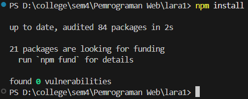
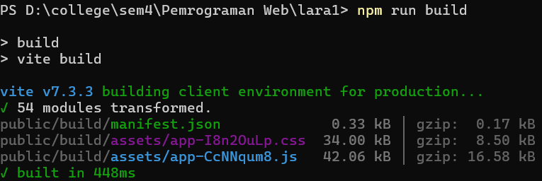
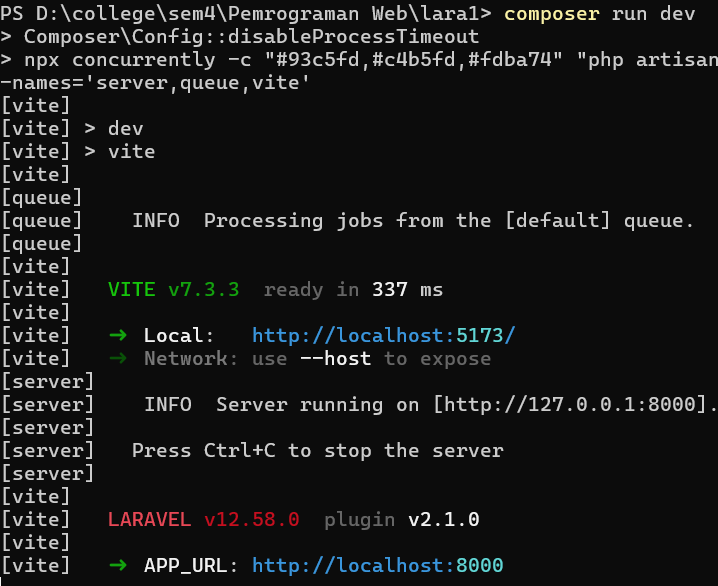
Terakhir kita jalankan perintah
php artisan serve untuk menjalankan project
laravelnya. Nanti terminal akan memberi output halaman
localhost tempat project kita berjalan.
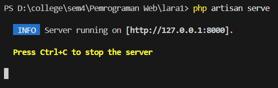
Jika tampilannya seperti ini, artinya project Laravel kita sudah berjalan dengan normal.
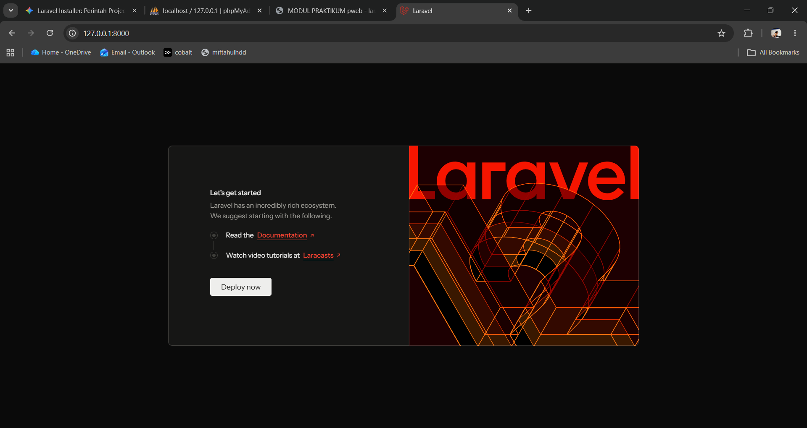
Selanjutnya kita akan mencoba print hello world. Disini saya
melakukannya dengan membuat route baru mengarah ke
/hello.
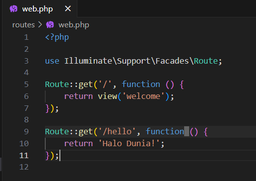
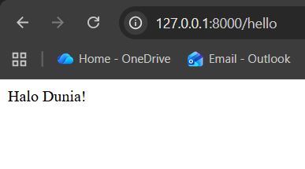
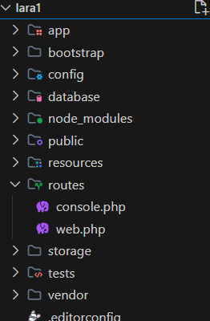
Model php artisan make: model sebuah-model.
Berfungsi untuk mengakses dan mengelola data atau database
seperti query ke database, insert, update, delete dan
lain-lain.
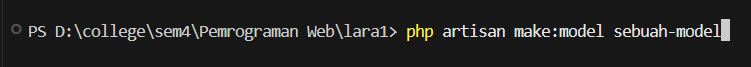
View. Berfungsi sebagai tampilan atau interface aplikasi,
untuk menampilkan data yang didapatkan dari suatu
model melalui controller.
Controller. Berfungsi untuk menangani request dan
response, menerima request dan memproses request
kemudian mengembalikannya dalam bentuk data atau view dari
suatu model.
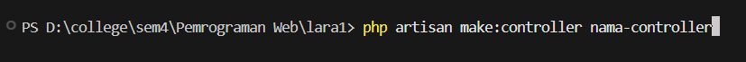